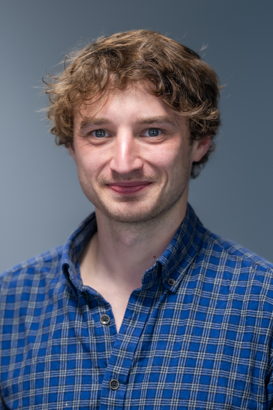

Our group brings together researchers at all career stages working on open quantum systems theory.

Dr Jake Iles-Smith
Senior Lecturer / Group Lead
Jake leads the SOQS group, working on the theory of open quantum systems with applications in quantum optics, quantum thermodynamics, and quantum computing. He has a background in the development of analytical and numerical methods for describing non-Markovian dynamics in quantum systems, and is interested in their impact on quantum technologies and quantum thermodynamics.

Dr Andrea Mattioni
Postdoctoral Researcher
AS
Dr Adam Stokes
Postdoctoral Researcher
AF
Aspen Fenzl
PhD Student
TM
Tom McLaughlin
PhD Student
MS
Mateusz Salamon
PhD Student
University of Manchester (co-supervised with Prof Ahsan Nazir)